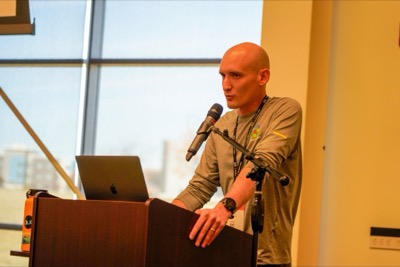

$ whoami
Staff Software Engineer · Community Leader · Speaker
I work at Source Allies, where I help teams build systems that handle millions of requests without waking anyone up at 3am. I care about observability, testing, and infrastructure as code — mostly because I've been burned by the absence of all three.
I run the Central Iowa Java Users Group and sometimes talk at conferences. I take the work seriously but not myself, which is probably obvious if you've ever seen some of my slides.